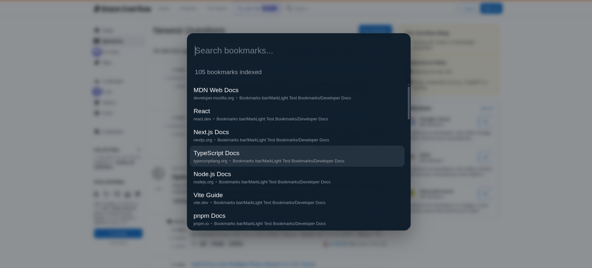
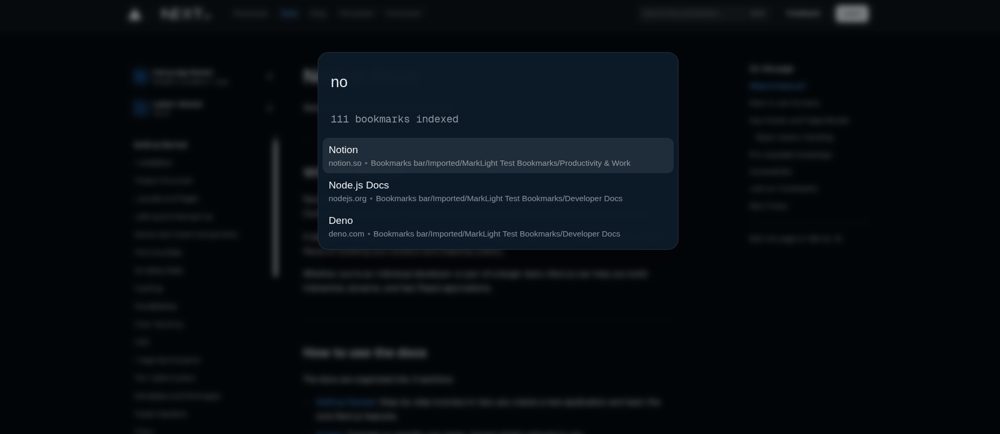
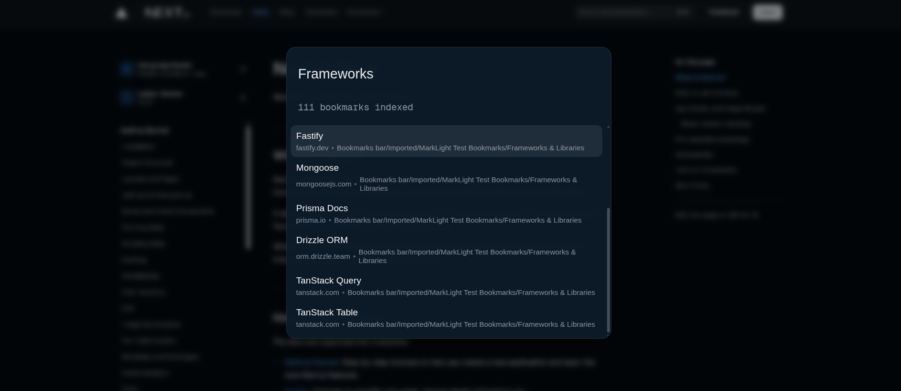
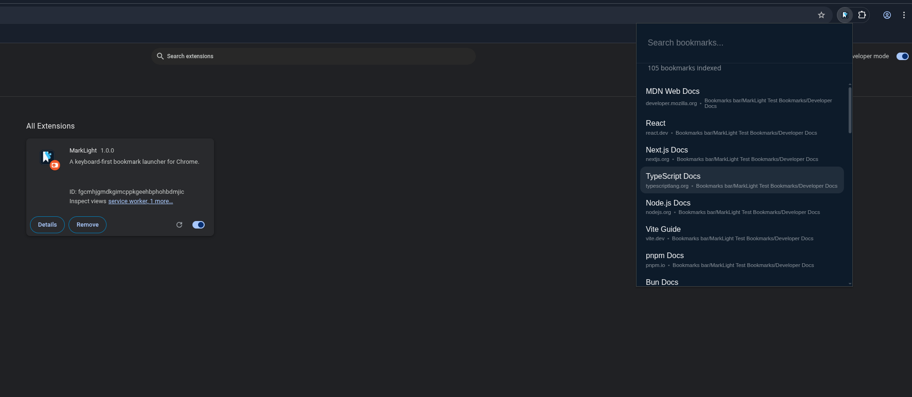

Instant Search
Results appear as you type. Search by title, URL, domain, or folder path. Exact title matches always rank first.
Stop hunting through folders. LaunchMark puts every bookmark a keystroke away — search by title, URL, domain, or folder and jump there in seconds.
Press Ctrl + Shift + K on any tab to open the launcher

LaunchMark does one job exceptionally well: getting you to the right bookmark with as little friction as possible.
Results appear as you type. Search by title, URL, domain, or folder path. Exact title matches always rank first.
Open with Ctrl+Shift+K, navigate with arrow keys, confirm with Enter. Never lift your hands.
All search and indexing happens locally in your browser. Zero telemetry, zero data collection, zero remote servers.
Search by folder name to surface bookmarks buried deep in your tree. Works great for large, well-organized collections.
A focused in-page panel — not a heavy management UI. It opens instantly and disappears the moment you're done.
Press Enter for the current tab or Ctrl+Enter for a new tab. Your workflow, your choice.
The launcher appears directly in the active tab — no context switching, no new windows, no friction.
Press Ctrl+Shift+K on any regular webpage. The launcher appears instantly.
Start typing a title, URL fragment, domain, or folder name. Results narrow in real time with every keystroke.
Use ↑ and ↓ to move through ranked results. The best match is always at the top.
Press Enter to open in the current tab, or Ctrl+Enter for a new tab. Done.



LaunchMark only asks for what it needs. Every permission has a specific, understandable reason — and no data is ever sent anywhere.
Read your saved bookmarks to build the local search index. Nothing is modified or transmitted.
Display the launcher overlay in the active tab. Used only when you trigger the shortcut.
Detect the active tab so the keyboard shortcut works and the launcher targets the right page.
Inject the launcher UI as a fallback on pages where content scripts load dynamically.
Allow the launcher to appear on any regular webpage — not limited to specific domains.
Zero analytics, zero telemetry, zero data transmission. All processing stays on your device.
Free forever. Works immediately. No account, no setup, no data shared.